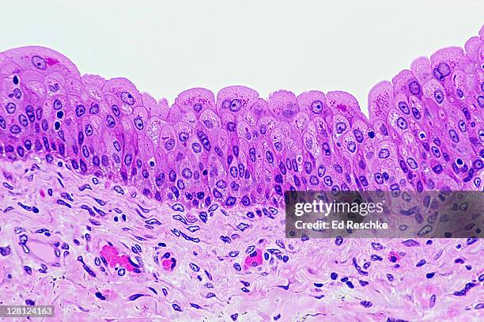
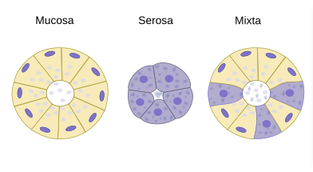
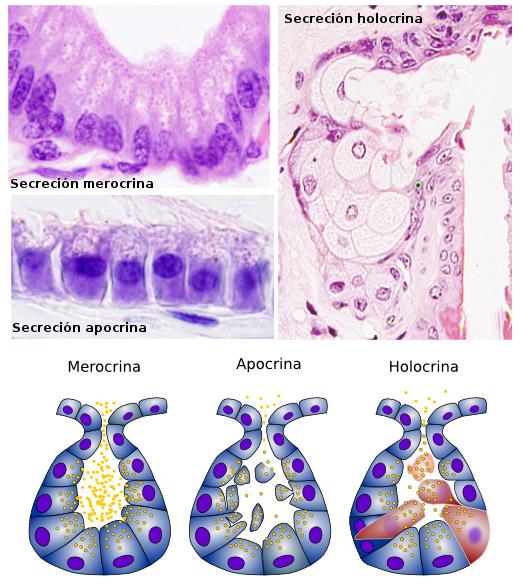
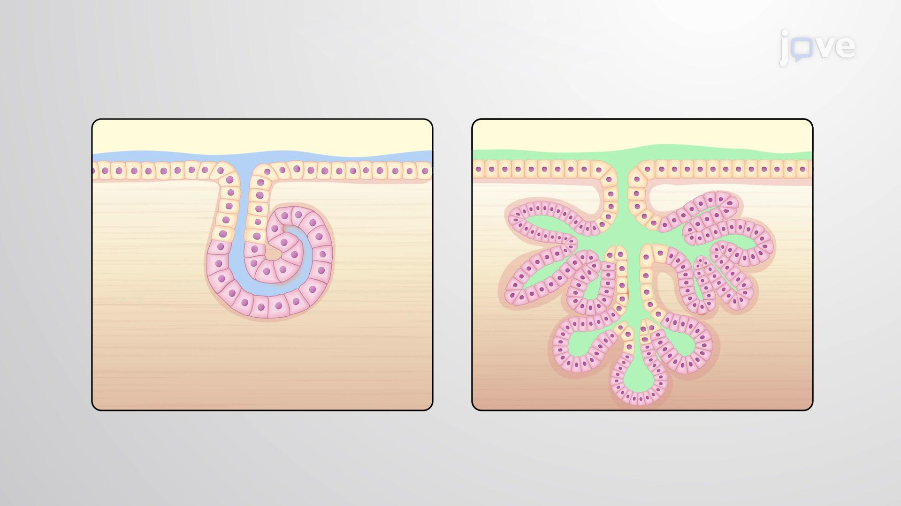
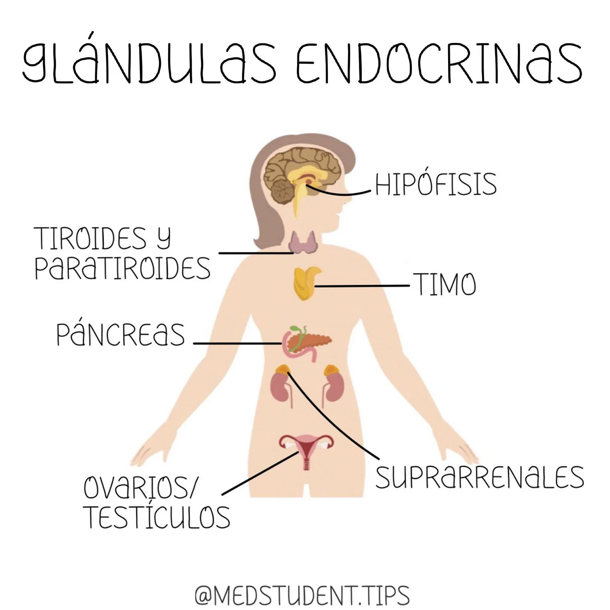
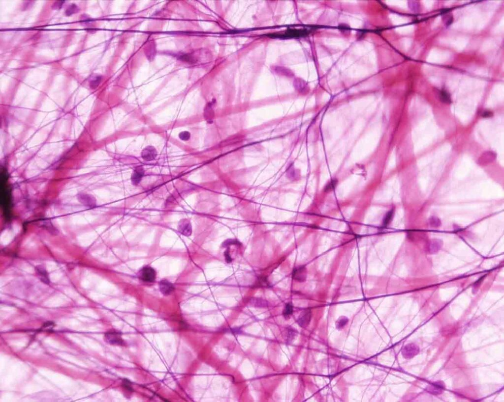
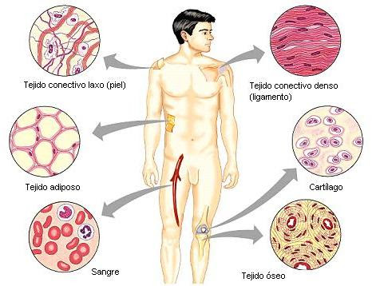

Tejido Epitelial 🧬
Definición:
El tejido epitelial es un tipo de tejido compuesto por células fuertemente unidas entre sí, que recubre las superficies externas del cuerpo (como la piel) y las internas (como el revestimiento del tracto digestivo, respiratorio, urinario, entre otros). También forma las glándulas.
Función:
El tejido epitelial cumple funciones fundamentales como:
- Protección: Cubre y protege superficies corporales contra el daño físico, químico y biológico.
- Absorción: En el intestino, permite el paso de nutrientes al cuerpo.
- Secreción: Forma parte de glándulas que liberan enzimas, hormonas, moco, entre otros.
- Intercambio: Facilita el paso de gases (como en los alvéolos pulmonares).
- Percepción sensorial: En estructuras especializadas como las papilas gustativas o la retina.
Clasificación:
Se clasifica según el número de capas celulares y la forma de sus células:
Según el número de capas celulares:
- Epitelio simple: una sola capa de células.
- Epitelio estratificado: múltiples capas de células.
- Epitelio seudoestratificado: parece tener varias capas, pero todas las células tocan la membrana basal.
- Epitelio de transición: tipo especializado que puede cambiar de forma y número de capas, típico de las vías urinarias.
Según la forma de las células:
- Plano (escamoso): células aplanadas.
- Cúbico: células con forma de cubo.
- Cilíndrico (columnar): células más altas que anchas.
Ejemplos combinados:
- Epitelio simple plano: en los alvéolos pulmonares.
- Epitelio estratificado plano: en la epidermis de la piel.
- Epitelio cúbico simple: en túbulos renales.
- Epitelio cilíndrico simple: en el intestino delgado.
- Epitelio seudoestratificado cilíndrico ciliado: en la tráquea.
- Epitelio de transición: en la vejiga urinaria.
Glándulas y Secreción 🧬

Las glándulas son estructuras especializadas en la producción y liberación de sustancias como enzimas, hormonas, mucosidades, entre otras. Se dividen principalmente en glándulas exocrinas y endocrinas, según el destino de su secreción.
Clasificación de las glándulas exocrinas por el producto de secreción:
-
Glándulas serosas
Secretan líquidos acuosos ricos en proteínas, como enzimas.
Ejemplo: glándulas salivales parótidas (producen amilasa). -
Glándulas mucosas
Producen moco, una secreción viscosa rica en mucina (glucoproteína).
Ejemplo: glándulas del intestino grueso. -
Glándulas mixtas (seromucosas)
Producen tanto componentes serosos como mucosos.
Ejemplo: glándulas submandibulares.
Clasificación de las glándulas exocrinas por la forma de secreción:
-
Merocrinas (eccrinas)
Liberan su producto por exocitosis, sin perder parte de la célula.
Ejemplo: glándulas sudoríparas eccrinas, glándulas salivales. -
Apocrinas
Liberan su producto junto con una porción del citoplasma.
Ejemplo: glándulas sudoríparas apocrinas (axilas, ingles). -
Holocrinas
La célula se destruye completamente al liberar su contenido.
Ejemplo: glándulas sebáceas de la piel.
Clasificación de las glándulas exocrinas por el número de células:
-
Unicelulares
Formadas por una sola célula especializada.
Ejemplo: célula caliciforme (produce moco en intestino y vías respiratorias). -
Multicelulares
Formadas por varias células organizadas en estructuras más complejas.
Pueden tener conductos (simples o compuestos) y formas diversas (tubulares, acinares, túbulo-acinares).
Glándulas endocrinas:
- No poseen conductos.
- Liberan sus productos directamente al torrente sanguíneo, donde actúan como hormonas que regulan funciones fisiológicas en órganos distantes.
Ejemplos importantes:
- Tiroides: secreta tiroxina (T4) y triyodotironina (T3), regulan el metabolismo.
- Hipófisis (pituitaria): controla otras glándulas endocrinas.
- Suprarrenales: producen cortisol, adrenalina, etc.
- Páncreas (endócrino): secreta insulina y glucagón (control de la glucosa).
- Gónadas (testículos y ovarios): producen hormonas sexuales.
Tejido Conectivo 🧬
Características:
El tejido conectivo es un tejido biológico de origen mesodérmico que se caracteriza por tener células dispersas dentro de una abundante sustancia intercelular (matriz extracelular). Esta matriz puede ser líquida, gelatinosa o sólida, dependiendo del tipo de tejido.
Funciones:
- Sostén estructural de órganos y tejidos.
- Conexión entre otros tejidos (une, envuelve y soporta).
- Transporte de sustancias (como en la sangre y linfa).
- Almacenamiento de energía (tejido adiposo).
- Defensa inmunológica (gracias a células como los macrófagos y linfocitos).
- Reparación tisular (cicatrización).
Componentes:
-
Células
Fijas: fibroblastos, adipocitos, células mesenquimales.
Móviles: macrófagos, mastocitos, linfocitos, plasmocitos. -
Fibras (proteínas estructurales)
- Colágenas: resistencia y firmeza.
- Elásticas: elasticidad.
- Reticulares: sostén fino en órganos blandos. -
Sustancia fundamental amorfa
Material gelatinoso que rodea a las células y fibras.
Sustancia intercelular (Matriz extracelular):
Compuesta por:
- Fibras (colágenas, elásticas, reticulares).
- Sustancia fundamental: contiene proteoglucanos, glucosaminoglicanos (como ácido hialurónico), agua, sales minerales y proteínas plasmáticas.
Su proporción y consistencia determinan el tipo de tejido conectivo (desde blando como el tejido laxo hasta duro como el cartílago o hueso).
Clasificación del tejido conectivo:
Conectivo embrionario:

- Mesenquimatoso: base del desarrollo de todos los tipos de tejido conectivo.
- Mucoso: gelatina de Wharton en el cordón umbilical.
Conectivo del adulto:
1. Tejido conectivo propiamente dicho:
-
Laxo: más células que fibras, muy vascularizado.
Ejemplo: tejido areolar, subcutáneo. -
Denso: más fibras que células.
- Regular: tendones, ligamentos.
- Irregular: dermis de la piel.
2. Tejido conectivo especializado:

- Adiposo: almacena grasa.
- Cartilaginoso: resistente y flexible (hialino, elástico, fibroso).
- Óseo: duro y calcificado (compacto y esponjoso).
- Sanguíneo: tejido líquido que transporta células y sustancias.
- Linfático: defensa inmunológica.
Regeneración:
El tejido conectivo posee alta capacidad regenerativa, especialmente el laxo, gracias a la actividad de los fibroblastos y células madre mesenquimales. Sin embargo, el cartílago y el tejido óseo tienen regeneración más lenta debido a su menor vascularización o proceso de remodelación más complejo.
Tejido Adiposo 🧬

Definición:
El tejido adiposo es un tipo de tejido conectivo especializado cuya principal función es almacenar lípidos (grasas) en forma de triglicéridos. Está formado por células llamadas adipocitos, rodeadas de una matriz extracelular escasa y bien vascularizada.
Clasificación:
1. Tejido adiposo blanco (unilocular):
- Células grandes con una sola gota grande de grasa (núcleo desplazado a la periferia).
- Funciones principales:
- Reserva energética.
- Aislante térmico.
- Amortiguador mecánico (protección de órganos).
- Secreción de hormonas como la leptina (regula el apetito y el metabolismo).
- Ubicación: hipodermis, mesenterio, alrededor de riñones, glándula mamaria.
2. Tejido adiposo pardo (multilocular):
- Células más pequeñascon múltiples gotas lipídicas y abundantes mitocondrias (dan color pardo).
- Función principal: termogénesis (producción de calor sin escalofríos).
- Muy activo en recién nacidos y animales hibernantes.
- Ubicación en humanos: en la región interescapular, cuello y alrededor de grandes vasos (más abundante en lactantes, disminuye con la edad).
Funciones del tejido adiposo:
- Reserva energética (grasa = energía de larga duración).
- Aislamiento térmico (reduce la pérdida de calor).
- Protección mecánica (amortigua golpes).
- Endocrina: secreta adipocinas (leptina, adiponectina, resistina), que regulan metabolismo, inflamación y sensibilidad a la insulina.
Aspecto clínico relevante:
- El exceso de tejido adiposo se relaciona con obesidad, diabetes tipo 2, enfermedades cardiovasculares y síndrome metabólico.
- Su reducción extrema, como en caquexia o anorexia, compromete funciones vitales.